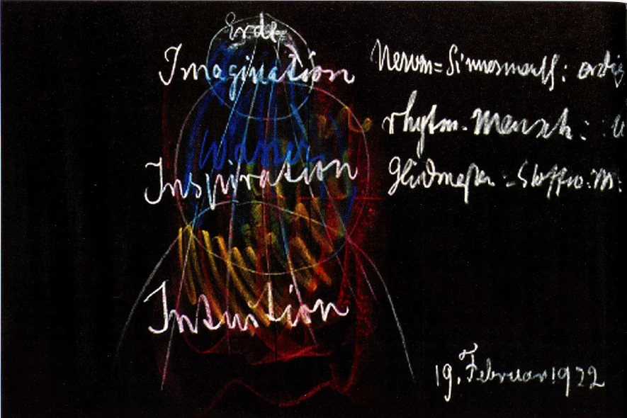

A organização corporal tríplice
Distinguir uma descrição funcional do corpo de corpo, alma e espírito.
GA 301 · Basel · 21 April 1920 · bodily organization
Conceitos desenvolvidos nesta lição
- A organização corporal tríplice
Lições das fontes: GA 301 · Basel · 21 April 1920 · bodily organization
Compreenda estas ideias no contexto da fonte; depois explique como o exemplo se relaciona com elas.
Retoma: Experiência interior e Eu.
Compreenda a relação
Estudamos três relações com o mundo e quatro membros do ser humano. Outra descrição pergunta pela organização da atividade corporal. Steiner distingue atividades neurossensorial, rítmica e metabólica; o movimento pertence ao aspecto metabólico-motor nessa terminologia.
Ele as relaciona respectivamente a pensar, sentir e querer. Trata-se de uma correspondência proposta entre atividade corporal e anímica, não de novos nomes para corpo, alma e espírito. São funções cooperantes, não três pessoas nem uma divisão simples entre cabeça, tórax e tudo o que está abaixo.
Ao estudar um diagrama, distinga suas categorias de suas setas explicativas. Os nomes identificam o que se compara; as setas expressam afirmações de Steiner sobre as relações. Nem um diagrama nem a experiência cotidiana da respiração demonstram toda a concepção.
Leia essa concepção como interpretação espiritual e fisiológica de Steiner, não como substituta da fisiologia contemporânea. A palestra também apresenta afirmações específicas sobre nervos; elas exigem avaliação científica separada e não são pré-requisitos para compreender a distinção conceitual aqui.
Do quadro de Steiner

Rudolf Steiner · desenho histórico de quadro-negro reproduzido pelo Rudolf Steiner Archive.
- Nervos e sentidos: organização corporal com ênfase na cabeça, que se estende pelo organismo.
- Organização rítmica: a relação entre respiração e circulação, com ênfase no tórax.
- Metabolismo e membros: processos que sustentam nutrição e movimento em todo o organismo.
O contexto deste desenho é mais amplo: Steiner também aborda elementos e os modos espirituais de conhecimento Imaginação, Inspiração e Intuição. As cores não são uma legenda dos quatro membros. A organização corporal tríplice é uma distinção diferente de corpo–alma–espírito. Leia a conferência para a interpretação completa.
Fonte e contexto: GA 210 · 19 February 1922 · Dornach · Ver imagem em tamanho integral

Ênfase funcional não significa compartimento isolado
As organizações neurossensorial, rítmica e metabólico-motora distinguem atividades no conjunto corporal. Percepção e atenção relativamente imóvel caracterizam um polo; movimento e transformação, outro; processos rítmicos fazem mediação. Cabeça, tórax e membros orientam espacialmente, mas as funções não terminam nas fronteiras entre regiões.
Pense em caminhar ouvindo alguém. Movimento, respiração, percepção e atenção ocorrem juntos. Nomear uma atividade não elimina as outras nem localiza a experiência inteira num órgão. Isso importa nas comparações posteriores entre raiz, folha e floração e atividades humanas. Compreenda a relação funcional proposta, sem transformar correspondência ilustrativa em mapa de recipientes separados. Essa tríade também responde a uma pergunta diferente de corpo, alma e espírito.
Leitura relacionada: Foundation course · threefold bodily organization.
Relacione com a fonte
GA 301 · Basel · 21 April 1920 · bodily organization
A explicação acima é material original do curso. Para aprofundar, identifique onde a fonte faz a distinção discutida aqui.
Leia a fonte →Uma pergunta para elaborar
“Tríplice” sempre significa corpo, alma e espírito?
Escreva uma resposta breve no caderno antes de compará-la com a explicação.
Compare com uma resposta comentada
Não. Nesta lição, refere-se a funções corporais. Nomeie os três termos e a pergunta da descrição antes de compará-la com outra descrição tríplice.
Seu caderno de aprendizagem
Explique a ideia, relacione-a à fonte e retome sua resposta. Você pode usar um exemplo fictício.
Retome esta prática ao longo do tempo
Use a atividade acima em ocasiões diferentes ou retome sua situação fictícia. Inclua a data. Um resultado que não mudou também é informação útil.
O salvamento é opcional e usa este navegador neste dispositivo. Exporte uma cópia para guardar em outro lugar.
As anotações ficam nesta página enquanto o salvamento estiver desativado.